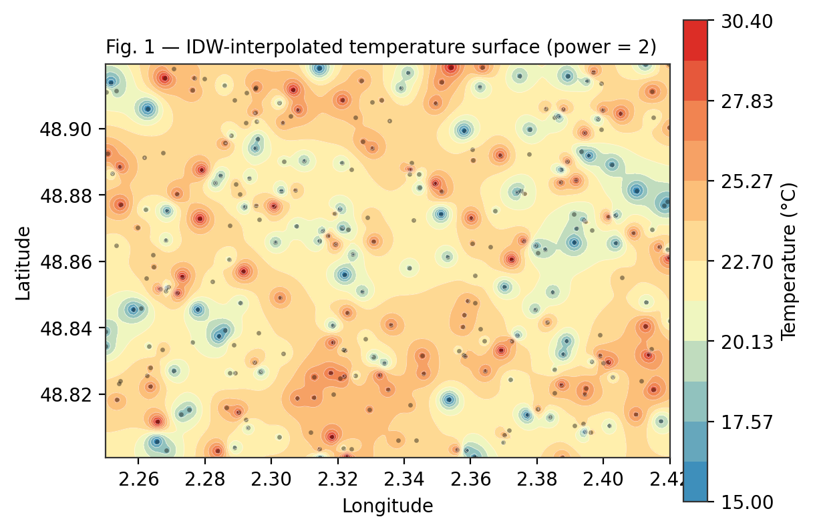
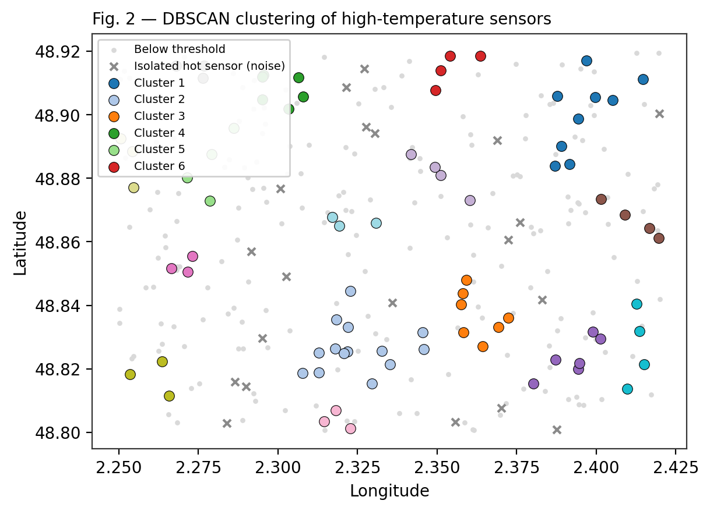
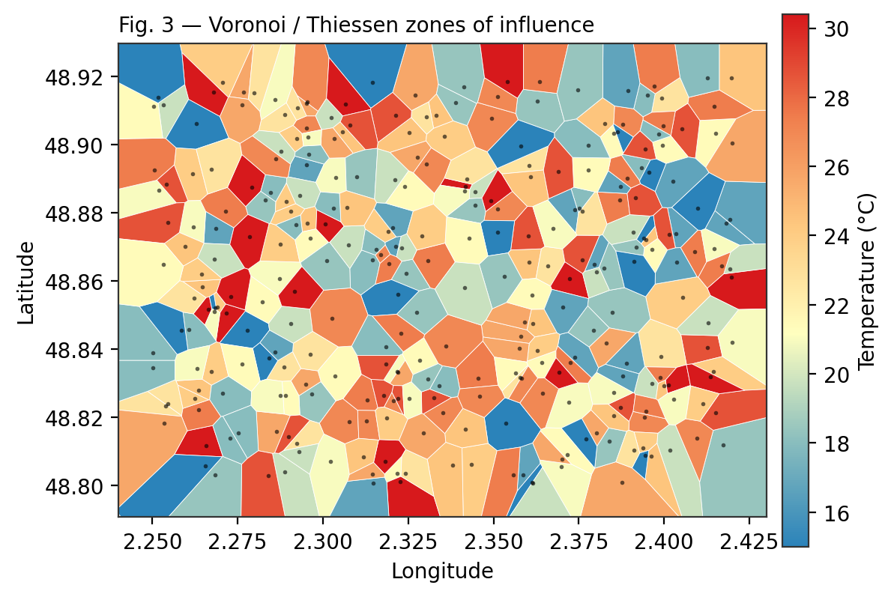
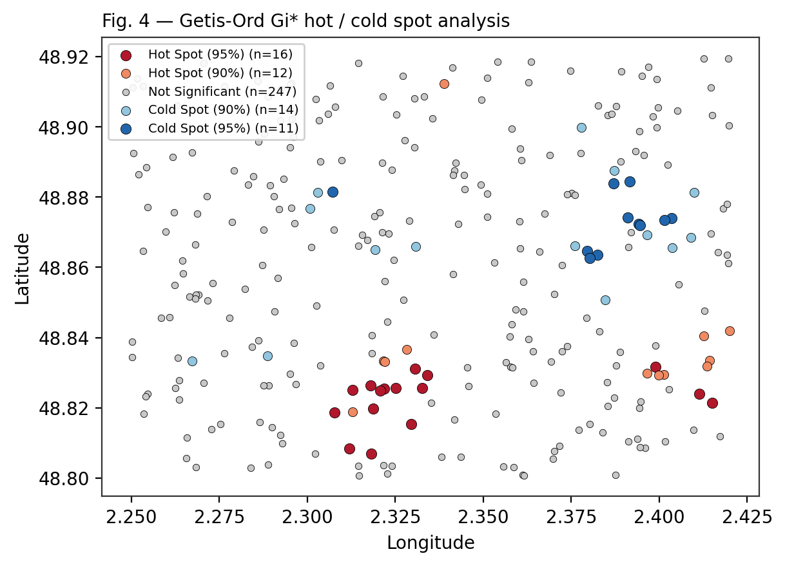

Développement d'outils SIG · Model Context Protocol · Python · Projet personnel, 2025 · Note technique
Analyse géospatiale pilotée par langage naturel
Une étude de cas sur le protocole QGIS-MCP
Résumé
Ce document documente une expérimentation du protocole QGIS-MCP (Model Context Protocol), qui permet de piloter une instance QGIS directement depuis une conversation en langage naturel. À partir d'un jeu de 300 capteurs de température synthétiques répartis sur l'agglomération parisienne, quatre méthodes d'analyse spatiale ont été mises en œuvre sans interaction manuelle avec l'interface graphique : interpolation par pondération inverse à la distance (IDW), partitionnement spatial par densité (DBSCAN), tessellation de Voronoï, et détection de structures spatiales significatives par la statistique locale de Getis-Ord Gi*. Les résultats montrent que le protocole permet non seulement d'orchestrer des algorithmes de la boîte à outils Processing existante, mais également d'exécuter du code arbitraire (PyQGIS, NumPy) pour implémenter des méthodes statistiques ne disposant pas d'algorithme natif.
1. Introduction
Le Model Context Protocol (MCP) définit une interface standardisée par laquelle un modèle de langage peut invoquer des outils externes de façon structurée. Appliqué à QGIS, ce protocole expose les fonctions du logiciel — gestion de projet, lecture d'attributs, exécution d'algorithmes de la boîte à outils Processing, et exécution de code PyQGIS arbitraire — comme autant d'appels de fonction accessibles depuis une conversation en langage naturel.
L'objectif de cette note est d'évaluer, sur un cas d'usage concret, dans quelle mesure ce mode d'interaction peut se substituer à la manipulation directe de l'interface graphique pour la conduite d'analyses spatiales standards. Quatre méthodes ont été retenues pour leur complémentarité méthodologique : une méthode d'interpolation continue, une méthode de partitionnement par densité, une méthode de partition exhaustive de l'espace, et une méthode de statistique spatiale inférentielle ne disposant pas d'implémentation native dans QGIS.
2. Données et méthodes
2.1 Jeu de données
Le jeu de données utilisé est une couche vectorielle ponctuelle de démonstration comprenant 300 entités de type « Sensor », chacune porteuse d'un identifiant (entity_id), d'un type d'entité et d'une valeur de température (attribut temperature, en degrés Celsius). Les capteurs sont répartis sur une emprise géographique correspondant approximativement à Paris intra-muros et sa proche périphérie (longitude 2,250° à 2,420° E ; latitude 48,801° à 48,920° N), en système de coordonnées géographiques EPSG:4326. Ces entités NGSI ont été chargées dans QGIS avec NGSI Loader, un plugin QGIS développé par l'auteur pour récupérer des entités NGSI v2 / NGSI-LD depuis un Context Broker et les afficher directement comme couche vectorielle — c'est ce plugin qui a servi à constituer la couche de 300 capteurs exploitée dans cette étude de cas.
Avertissement méthodologique : l'inspection des valeurs révèle un motif cyclique de période 15 se répétant à l'identique sur l'ensemble des 300 enregistrements, signature typique d'un jeu de données synthétique généré à des fins de démonstration plutôt que d'une mesure environnementale réelle. Les structures spatiales mises en évidence dans ce document (foyers de chaleur, autocorrélation) doivent donc être interprétées comme des artefacts de la position géographique relative des capteurs partageant une même phase du cycle, et non comme des phénomènes climatiques réels. Le jeu de données conserve néanmoins toute sa valeur pour l'objectif poursuivi ici : démontrer la mise en œuvre méthodologique des quatre analyses.
2.2 Environnement technique
Les analyses ont été exécutées au sein d'une instance QGIS 3.33 pilotée via le plugin serveur MCP, exposant les outils suivants : lecture de projet et de couches, exécution d'algorithmes Processing (module processing.run), et exécution de code PyQGIS arbitraire (fonction execute_code). Les figures présentées dans cette note ont été régénérées à l'identique dans un environnement Python indépendant (NumPy, SciPy, scikit-learn, Matplotlib) à partir des mêmes données et des mêmes paramètres, à des fins de mise en forme éditoriale ; les statistiques rapportées ont été vérifiées concordantes entre les deux environnements d'exécution.
3. Résultats
3.1 Interpolation spatiale par pondération inverse à la distance (IDW)
L'interpolation IDW estime la valeur d'un champ continu en tout point de l'espace à partir d'une moyenne des observations voisines pondérée par l'inverse de leur distance élevée à une puissance p (ici p = 2), au moyen de l'algorithme natif qgis:idwinterpolation. Cette méthode a produit une surface raster continue dont les valeurs s'étendent de 15,0 °C à 30,4 °C, correspondant exactement aux bornes empiriques du jeu de données.

La surface obtenue présente une structure fragmentée, cohérente avec l'absence d'autocorrélation spatiale réelle dans les données sous-jacentes (cf. §2.1) : chaque capteur génère une signature locale (« bullseye ») qui ne se propage pas de façon cohérente à ses voisins immédiats.
3.2 Partitionnement spatial par densité (DBSCAN)
Les 100 capteurs présentant une température supérieure au seuil moyenne + 0,5 écart-type (24,93 °C) ont été extraits (algorithme native:extractbyexpression), puis soumis à un partitionnement DBSCAN (native:dbscanclustering ; rayon de voisinage ε = 0,012° ≈ 1,3 km, taille minimale de groupe = 3). Cette méthode distingue les foyers de chaleur spatialement cohérents du bruit statistique constitué de capteurs chauds mais isolés.

Seize groupes ont été identifiés, de taille comprise entre 3 et 14 capteurs, pour vingt capteurs chauds classés comme bruit (isolés). Le groupe le plus étendu (14 capteurs) constitue le foyer le plus probable d'un point de vue purement géométrique.
3.3 Tessellation de Voronoï
La tessellation de Voronoï (native:voronoipolygons) associe à chaque capteur l'ensemble des points de l'espace qui lui sont plus proches que de tout autre capteur, produisant une partition exhaustive du plan en 300 polygones. Chaque polygone hérite des attributs de son capteur générateur, permettant une symbolisation choroplèthe directe.

Au-delà de la lecture thématique, la surface des cellules constitue un indicateur direct de la représentativité spatiale de chaque capteur : les grandes cellules signalent des zones sous-échantillonnées du réseau, information utile pour orienter un futur déploiement d'instruments.
3.4 Autocorrélation spatiale locale (Getis-Ord Gi*)
La statistique Gi* de Getis et Ord (1995) ne dispose d'aucune implémentation native dans la boîte à outils Processing de QGIS. Elle a été programmée directement au moyen de NumPy via l'interface d'exécution de code du protocole MCP, avec une matrice de contiguïté binaire définie par un seuil de distance de 0,02° (≈ 2,2 km, voisinage moyen de 16,8 capteurs). Le score obtenu pour chaque capteur s'interprète directement comme un z-score sous l'hypothèse nulle de distribution spatiale aléatoire.

La distribution des classes obtenues est résumée au Tableau 1. Sur 300 capteurs, 28 constituent un foyer chaud statistiquement significatif (16 à 95 %, 12 à 90 %) et 25 un foyer froid (11 à 95 %, 14 à 90 %), les 247 capteurs restants ne présentant pas de déviation significative par rapport à la distribution spatiale aléatoire.
Tableau 1 — Répartition des 300 capteurs par classe de significativité Gi*
| Classe | Effectif (n) | Part de l'échantillon |
|---|---|---|
| Hot Spot (confiance 95 %) | 16 | 5,3 % |
| Hot Spot (confiance 90 %) | 12 | 4,0 % |
| Non significatif | 247 | 82,3 % |
| Cold Spot (confiance 90 %) | 14 | 4,7 % |
| Cold Spot (confiance 95 %) | 11 | 3,7 % |
4. Discussion
Les quatre méthodes mises en œuvre répondent à des questions de recherche distinctes et se positionnent comme complémentaires plutôt que concurrentes. L'IDW répond à une logique d'estimation continue, le DBSCAN à une logique de détection de groupes, la tessellation de Voronoï à une logique de partition et d'affectation, et la statistique Gi* à une logique inférentielle de test d'hypothèse spatiale.
| Méthode | Nature du résultat | Question posée | Complexité algorithmique |
|---|---|---|---|
| IDW (Fig. 1) | Surface continue (raster) | Quelle est la température estimée en tout point ? | Algorithme Processing natif |
| DBSCAN (Fig. 2) | Groupes discrets de points | Où les capteurs chauds forment-ils un foyer réel ? | Algorithme Processing natif |
| Voronoï (Fig. 3) | Partition exhaustive (polygones) | Quelle portion d'espace chaque capteur représente-t-il ? | Algorithme Processing natif |
| Getis-Ord Gi* (Fig. 4) | Classification par significativité statistique | Où la température est-elle anormalement élevée/basse ? | Implémentation ad hoc (NumPy) — aucun algorithme natif |
Sur le plan technique, une distinction mérite d'être soulignée. Les trois premières méthodes mobilisent des algorithmes déjà encapsulés dans la boîte à outils Processing de QGIS : le rôle du protocole MCP se limite alors à l'orchestration — sélection de la couche, paramétrage, exécution, stylisation du résultat — normalement effectuée manuellement via l'interface graphique ou la console Python. La quatrième méthode, en revanche, ne correspond à aucun algorithme préexistant dans QGIS : son implémentation a nécessité l'écriture et l'exécution, à la volée, d'un script NumPy complet au sein de l'environnement PyQGIS. Cette capacité à passer de l'orchestration d'outils existants à la production de code original, sur simple demande formulée en langage naturel, constitue l'apport distinctif du protocole par rapport à une automatisation classique par script préécrit.
Les limites de cette étude de cas tiennent principalement à la nature synthétique du jeu de données (§2.1), qui ne permet pas de tirer de conclusion sur un phénomène climatique réel, ainsi qu'à l'absence de comparaison quantitative des temps d'exécution avec un flux de travail manuel équivalent, qui constituerait un prolongement naturel de ce travail.
5. Conclusion
Cette étude de cas illustre la faisabilité d'un pilotage complet d'un logiciel SIG par le langage naturel, depuis la lecture des données jusqu'à la production d'une cartographie stylisée, en passant par l'exécution d'algorithmes standards et l'implémentation de méthodes statistiques sur mesure. Le protocole QGIS-MCP se positionne ainsi moins comme un simple assistant documentaire que comme une couche d'orchestration et de développement à part entière, capable de combiner l'usage d'une boîte à outils existante et la production de code original au sein d'un même flux conversationnel.